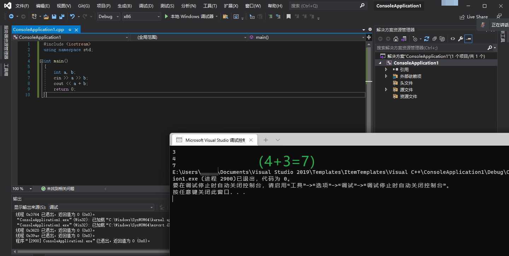

用C++定义变量并做一个简易的计算器
C++怎么加减乘除呢？
很简单：
在输出时加上加减乘除。
注意： | | 加法 | 减法 | 乘法 | 除法 | | :------- | :--: | :--: | :--: | :--: | | 课本上的 | + | - | × | ÷ | | 计算机 | + | - | * | / |
```cout<<1-2;
```cout<<1/2;
这样，就可以完成了
例题：计算7+2
#include <iostream>
using namespace std;
int main()
{
cout << 7+2;
return 0;
}
那么，做计算器的话，如何在终端台使用呢
——那就用定义了
int
int +一个英文为定义一个英文；如int a 就是定义一个叫a的东西
cin >>+已定义的的英文为读取用户输入的东西存储到已定义的英文。如cin>>a为读取用户输入的东西并存储到a。
输出：cout<<+定义英文，不用加" "。
例题2：让用户输入的东西存储到a。并输出
#include <iostream>
using namespace std;
int main()
{
int a;
cin>>a;
cout << a;
return 0;
}
小提示：完事要按回车哦。
在输入时，如果想达到一行输入n（n>2）的数值可以这样操作：
使用cin>>a>>b的方式
输入时两个数值之间可以空格，也可以换行
例题3:可输入的加法计算器
#include <iostream>
using namespace std;
int main()
{
int a,b;
cin>>a>>b;
cout << a+b;
return 0;
}
如图所示 